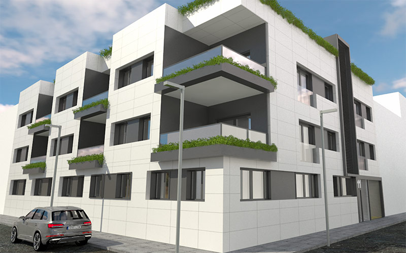

SintracDesde 2003
Cercanía que se nota
Personas que construyen para personas.
Desde 2003, construyendo en Madrid norte.
01
Proyecto
02
Construcción
03
Calidad y medio ambiente

Cercanía que se nota
Desde 2003, construyendo en Madrid norte.
Proyecto
Construcción
Calidad y medio ambiente